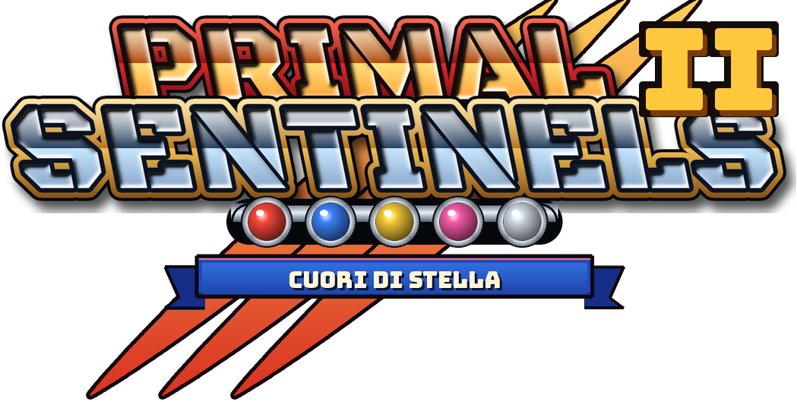
Gli atlanti usati dal gioco. Ogni posa è ritagliata seguendo la sagoma, quindi calci, armi e magie restano interi.
Ignis, Azur, Lyra, Aura, Onyx e i tre tipi di Senzavolto.
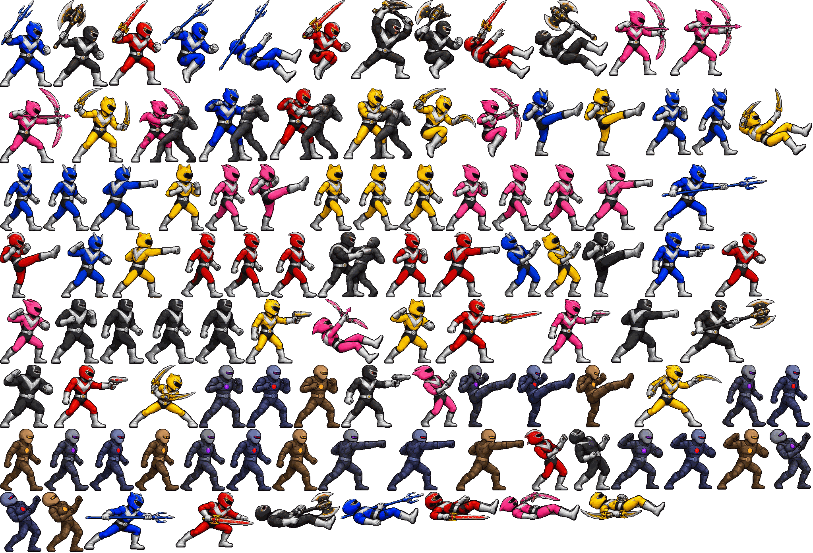
Mastice, Centipede, Trivor, Mimesi, Kharon, il Custode, Vespera ed Eclisse.
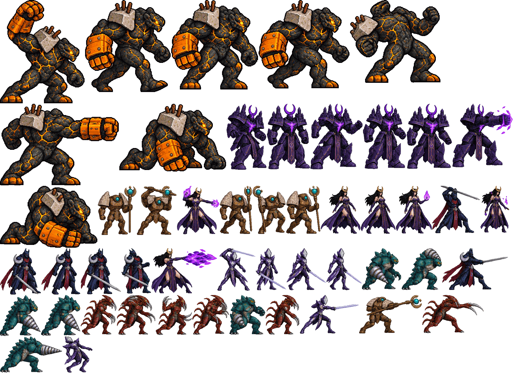
Nuovi: animati per l'intro, i livelli e la prima trasformazione.
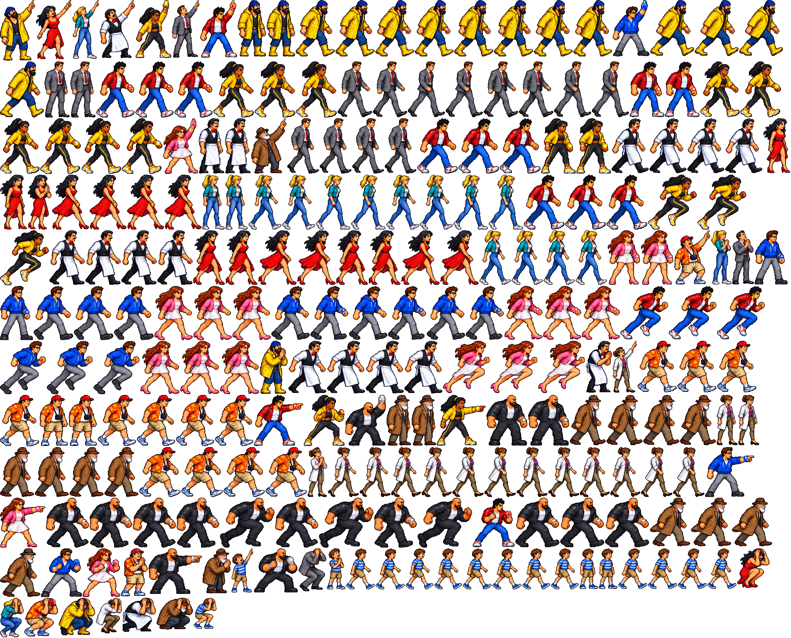
Cibo, energia, punti, oggetti distruttibili, le armi dei cinque ranger e il Cannone Primordiale.
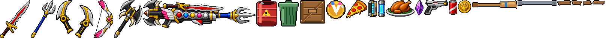
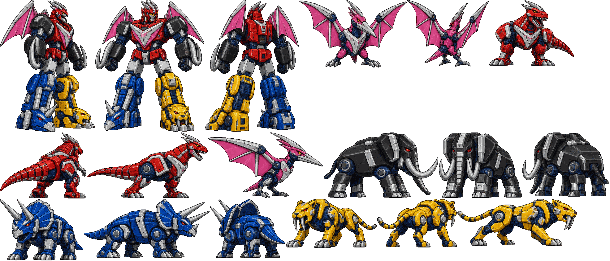
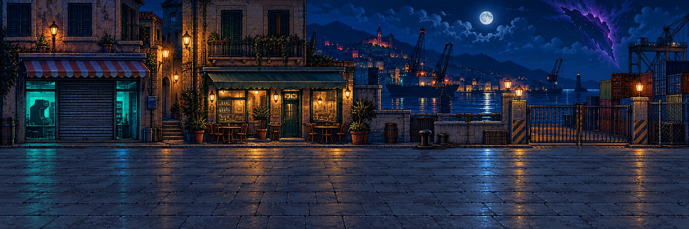
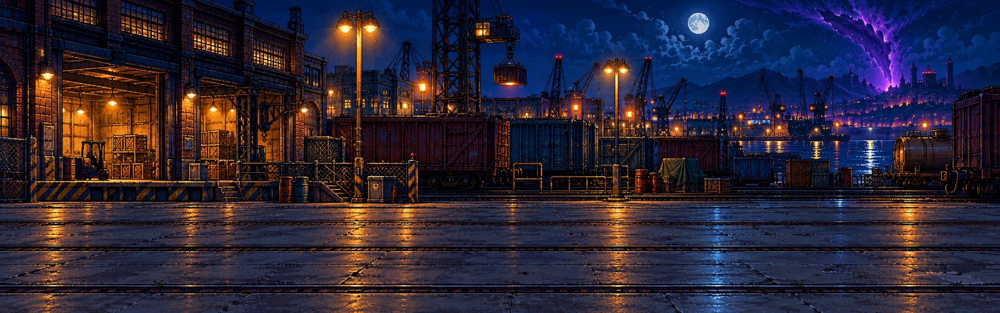
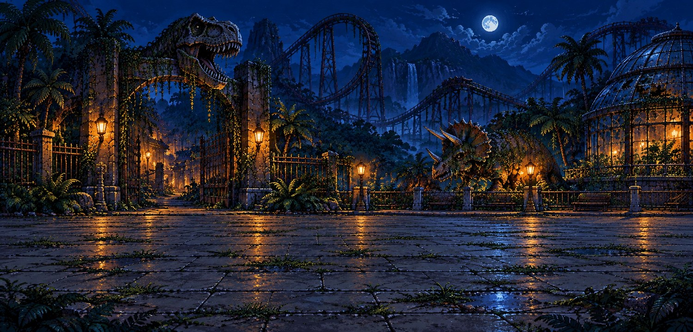
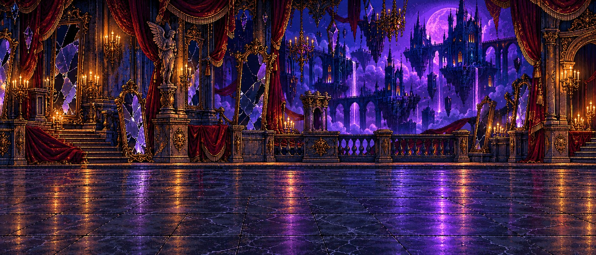
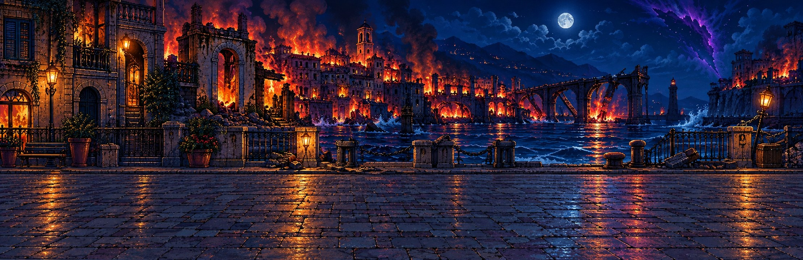
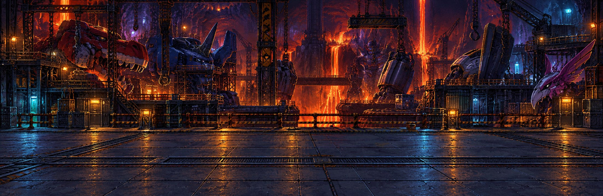
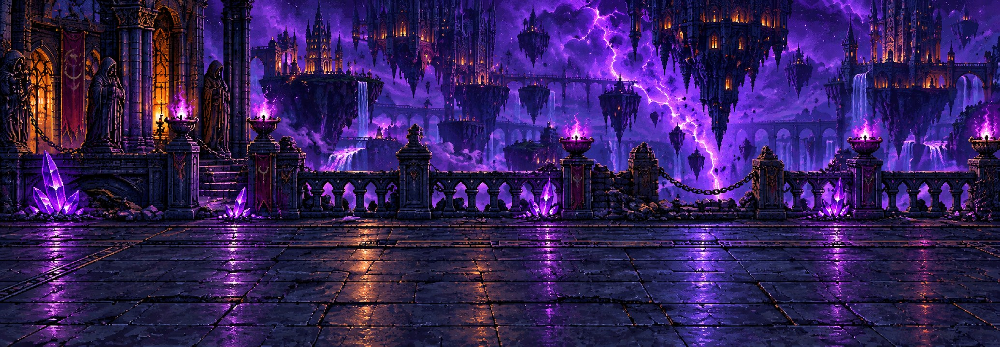
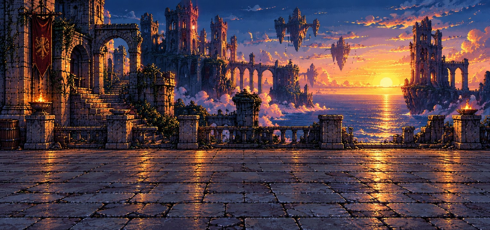